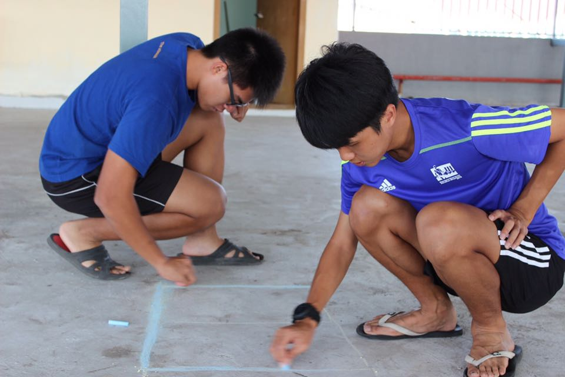

AmScar 2016 Current Result
Am斯卡得主花落谁家？最近成绩全在这里！
Am草

颜佳煣
2015年5月23日 第一次看到你的时候 我觉得你好帅 想在开学的时候认识你 冥冥中却早已注定了我们的相遇相识
AmKidKid

纪智胜2
幼稚可爱 车见车载 这么sohai的老人去哪里找
AmAMAM

OneWayTeo
实在太干，我看不下去......
Am荧幕情侣

长智与长智右手
左手只是辅助，这是一个正宫当道的年代。右手对长智意义非凡，在他们许多照片影片中记载着。虽然看起来蛮dry的，然而长智并不孤单，右手在细心的照料下茁壮的成长，不仅对他不离不弃，甚至为他任劳任怨，何等情谊！实在让我为之动容。
Am睡神

Martin Loh
Martin实至名归 哈哈哈 😝😝😝
Am默契

谢维杰，纪智胜
同样的肌肤、同样的款式、最佳搭档
AmJayChou

方志毅
我觉得被提名者全身上下带着男神气息，多才多艺，音乐·运动·摄影·成绩都是他手掌下的领域 ！
AmDryDry
郑释恩
DRY了22年，就让他得奖吧！
Association of Malaysian Chinese Independent School Alumni 2014